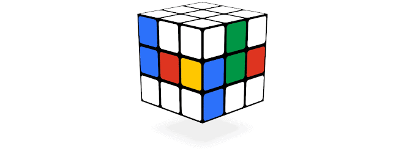
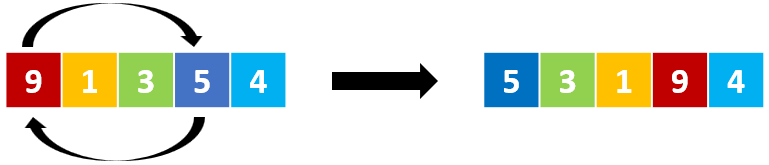
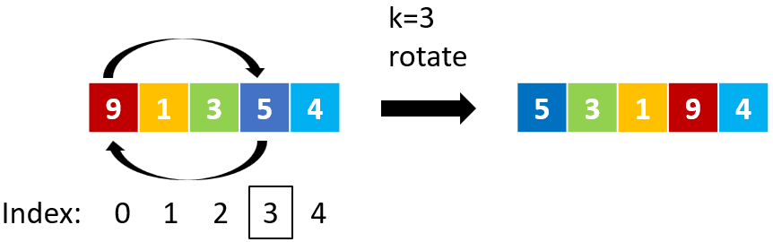
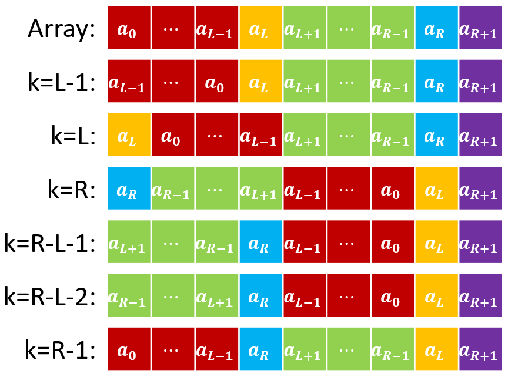
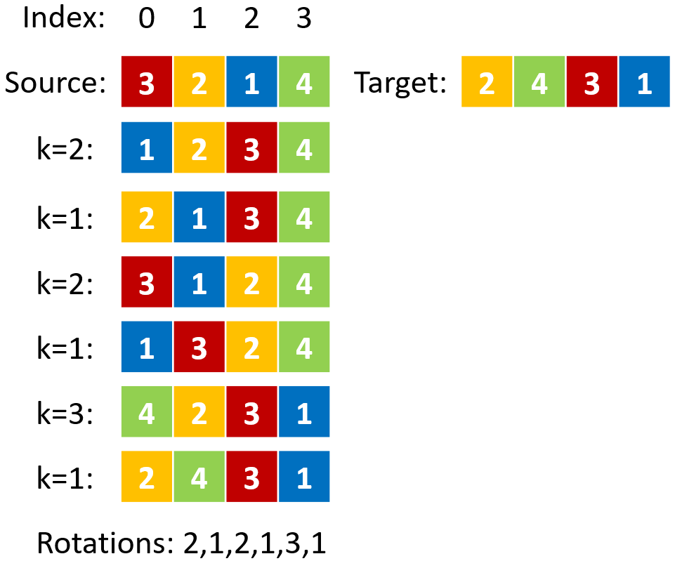
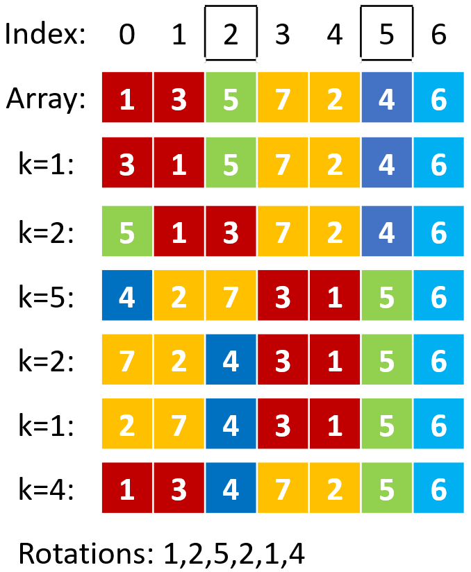

There are a few things you CANNOT do. Failure to observe these rules would potentially result in ZERO mark for your assignment.
About Academic Integrity:
We highly value academic integrity. Please read the Honor Code section on our course webpage to make sure you understand what is considered as plagiarism and what the penalties are. The following are some of the highlights:
This programming assignment is challenging, so you are highly recommended to start early. If you need clarification on the requirements, please feel free to post on the Piazza. However, to avoid cluttering the forum with repeated/trivial questions, please carefully read all the given code, webpage description, sample output, and latest FAQ (refresh this page regularly) carefully before you post your questions. Also please be reminded that we won't debug for any student's assignment for the sake of fairness.

Most of you may have heard of or played with the Rubik's Cube or the Magic Cube, a 3D combination puzzle invented in 1974 by Hungarian sculptor and professor of architecture Ernő Rubik. The classic Magic Cube is a cube-shaped device made up of 26 small cubes that rotate on a central axis; nine colored cube faces, in three rows of three each, form each side of the cube. When you rotate a plane on an axis, all cube faces on the same plane will rotate together. To solve the puzzle, you are supposed to perform a series of rotations to transform it into the target cube face combination—one among 43 quintillion possible ones.
While the original Magic Cube puzzle is difficult to solve, in this assignment we are going to consider a simpler 1D version of the Magic Cube, referred to as the Magic Array. The Magic Array is implemented using a 1D integer array in C++. You are supposed to first implement the basic rotation action, which will reverse the order of all elements in the specified subarray. Then, based on the rotation actions, you are supposed to implement three advanced actions , i.e. swap, sort and transform.

In this programming assignment, we hope that you can make full use of knowledges you have learned so far in the COMP2011 class, including Control Statement, Loop Statement, Function and Array.
Sounds interesting? Let's get started now!
In this assignment, the Magic Array is defined as a 1D integer array of length , and each element in the array is a digit from to : .

To play with the Magic Array, you are not supposed to directly change the order or value of the elements (just like you are not allowed to solve the Magic Cube by disassembling and reassembling). What you can do is to perform rotation on the array. Given the array we have defined, the rotate action is defined as the following two steps:
By performing a series of rotate actions, we can further implement the following complex actions: swap, sort and transform.
One rotation action will change the order of all elements in the specified subarray. So, it is tricky if we only want to swap the position of two elements without affecting the order of the others. Denoting the left and right index of the two elements to be swapped as and , the swap in a general case can be done by performing the following six rotations:
A visualization:

While the above six steps give a solution to the general cases, there are some special boundary cases that the red/green/purple parts in the figure above are missing, e.g., when , there won't be the red part. You are supposed to consider those special cases in this assignment.
Sorting is another important action when we play with the Magic Array with rotations. Rotations can be used to sort all elements in the Magic Array too.
For example, Bubble Sort is a well-known sorting algorithm (you can find detailed information here, and a visualization here). To sort a list, Bubble Sort repeatedly steps through the list, compares adjacent elements and swaps them if they are in the wrong order. The pass through the list is repeated until the list is sorted.
We can adapt Bubble Sort to our Magic Array by substituting the swap action in the original algorithm with the "swap by rotation" action we have defined.
Using the "sort by rotation" action, we can easily turn a given array into its sorted form by a series of rotations. Here we extend the sort action to a more general case, that we refer to as the "transform by rotation" action. Given two Magic Array and , if has the same elements as but in a different ordering, there exists a "transform by rotation" action, which uses a series of rotations to turn the array into the array.

Before you start to do the tasks, please carefully read through the Definitions sections.
We have provided a skeleton code for you, and you must complete the following tasks based on that skeleton code. You are encouraged to complete those tasks in the given order. And you are encouraged to reuse the functions you have already implemented. You can also write your own helper functions, but please make sure the function you call is bug-free, or you may lose marks in all tasks that call this function.
In this assignment, you can assume the length of the Magic Array is NO MORE THAN . And the length of the rotation series is NO MORE THAN .
Two global constants have been defined in the skeleton code for you to use (You cannot change those defined global variables):
const int MAX_ARR_LEN = 16; const int MAX_ROTATIONS = 1024;
15 PointsRotate
int rotate(int arr[], int arrLen, int k)
Parameters:
arr: the array to be rotated.arrLen: the length of arr.k: the integer specifying the subarray to be rotated.Description:
k is not in :
standard output) with an ending endl.-1.arr.0.Example:
arr=[9,1,3,5,4], arrLen=5, k=3.arr=[5,3,1,9,4].arr=[9,1,3,5,4], arrLen=5, k=6.30 PointsSwap two elements of the array by rotation without affecting the order of the other elements, and record the s used in the rotations.
int swapAndRecord(int arr[], int arrLen, int indexA, int indexB, int rotations[], int &rotationLen)
Parameters:
arr: the array.arrLen: length of arr.indexA and indexB: the index of the two elements to be swapped.rotations: rotations to swap the two elements as required.rotationLen: length of rotations.Description:
indexA or indexB is not in :
standard output) with an ending endl.-1.indexA and indexB of arr by rotations.rotations.rotationLen.0.MAX_ROTATIONS.Example:
arr=[1,3,5,7,2,4,6], arrLen=7, indexA=5, indexB=2.arr=[1,3,4,7,2,5,6].rotations=[1,2,5,2,1,4].rotationLen=6.arr=[1,3,5,7,2,4,6], arrLen=7, indexA=5, indexB=10.
25 PointsSort the array by rotation, and record the s used in the rotations.
void sortAndRecord(int arr[], int arrLen, int rotations[], int &rotationLen)
Parameters:
arr: the array to be sorted.arrLen: the length of arr.rotations: rotations to sort arr.rotationLen: length of rotations.Description:
arr by rotations.rotations.rotationLen.MAX_ROTATIONS.Example
arr=[1,3,5,7,2,4,6], arrLen=7.arr=[1,2,3,4,5,6,7].rotations=[3,6,0,5,0,4,0,3,0,2,0,1].rotationLen=12.30 PointsTransform the source array into the target by rotation, and record the s used in the rotations.
int transformAndRecord(int src[], int tgt[], int arrLen, int rotations[], int &rotationLen)
Parameters:
src: the source array to be transformed by rotations.tgt: the target array that src should be transformed to.arrLen: the length of src and tgt.rotations: actions to transform src to tgt.rotationLen: length of rotations.Description:
src and tgt always have the same length.arr and tgt have different elements:
-1.arr to tgt by rotations.rotations.rotationLen.MAX_ROTATIONS.Example:
src=[1,3,5,7,2,4,6], tgt=[1,5,3,7,2,4,6] arrLen=7.src=[1,5,3,7,2,4,6].rotations=[1,2,1].rotationLen=3.src=[1,3,5,7,2,4,6], tgt=[1,5,3,7,2,4,7] arrLen=7.Skeleton Code
Sample Executables
We have also prepared sample executables for your better understanding about this assignment.
You are required to submit your solution to our auto-grading system ZINC (ZINC).
Please rename your solution file to "pa1.cpp", and submit it to ZINC.
Please read and follow the instructions Here.
23:59, 15th October 2021 (Fri)
ZINC submissions will be accepted.It is required that your submissions can be compiled and run successfully in our online auto-grader ZINC. If we cannot even compile your work, it won't be graded. Therefore, for parts that you cannot finish, just put in dummy/empty implementation so that your whole program can be compiled for ZINC to grade the other parts that you have done. Again, you should wait for and check the grading report after each submission to ZINC.
There will be a penalty of -1 point (out of a maximum 100 points) for every minute you are late. For instance, since the deadline of the assignment is 23:59:00 on 15th OCT., if you submit your solution at 01:00:00 on 16th OCT, there will be a penalty of -61 points for your assignment. However, the lowest grade you may get from an assignment is zero: any negative score after the deduction due to late penalty (and any other penalties) will be reset to zero.
Your assignment will be automatically graded by our auto-grading system ZINC.
pa1.cpp, anything written below the line// DO NOT WRITE ANYTHING AFTER THIS LINE. ANYTHING AFTER THIS LINE WILL BE REPLACED.
will be replaced during grading. Make sure you write all your solution codes above this line.ZINC grading report. Be careful about endl.endl or your own debugging messages. Extra output will also lead to 0 mark for that task.ZINC to grade your work and then check the grading report carefully.rotations with its length in rotateLen. The skeleton code doesn't check the correctness of your rotations, it just shows the result. So, if your solution shows right Magic Array result with the skeleton code but gets tested wrong on ZINC, please check the correctness of rotations and rotationLen in your result. You can just try to apply the s in the rotations on the original array by hand to see whether it can reach the target. Related forum discussions: @46.MAX_ROTATIONS.k=0 is accepted, though it will do nothing to the array.2021-10-01 16:30:00, fixed a bug in the skeleton code line 212 (in the function void runTransform(int arr[], int arrLen)):
int tgt[arrLen], initResult = -1;
int tgt[MAX_ARR_LEN], initResult = -1;
Please download and use the latest skeleton code at 4 Downloads.
2021-10-01 17:10:00, fixed several typos in descriptions of 3.1 Task 1 and 3.2 Task 2:
In 3.1 Task 1
- Description:
Ifkis not in [0,arrLen]:- If
kis not in :In 3.2 Task 2
- Description:
IfindexAorindexBis not in [0,arrLen]:- If
indexAorindexBis not in :
2021-10-01 22:26:00, revised the figure in 2.2.1 Swap by Rotation, which may cause misunderstanding about the indices.
2021-10-02 23:00:00, fixed a bug in the ZINC configurations that mistakenly deduct points from task 2/3/4 even when the result rotations and rotationLen can achieve the specified goal.
Please refer to your latest ZINC submission report.
2021-10-02 23:00:00, fixed a bug in the sample executables that may produce wrong result in some cases.
Please download and refer to the latest sample executables at 4 Downloads.
2021-10-08 17:00:00, fixed a typo in descriptions of 3.4 Task 4:
- Example:
src=[1,3,5,7,2,4,6],tgt=[1,5,3,7,2,4,6]arrLen=7.- After function call:
src=[1,5,3,7,2,4,6].src=[1,5,3,7,2,4,6].rotations=[2,1].rotationLen=2.rotations=[1,2,1].rotationLen=3.- return=0.
2021-10-08 17:00:00, fixed a bug in the ZINC configurations that may show wrong value in the debug information.
Please refer to your latest ZINC submission report.
2021-10-08 17:00:00, fixed a typo in the skeleton code line 274 (in the function void runOption()):
cout << "? Please enter an option (0-7): ";
cout << "? Please enter an option (0-6): ";
The same typos in the sample executables are also corrected.
This typo won't affect your result and your final grade.